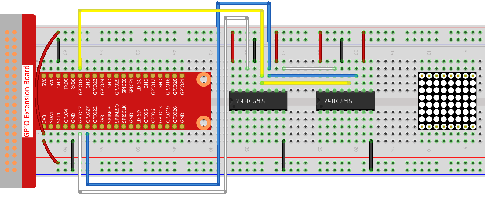

Note
Hello, welcome to the SunFounder Raspberry Pi & Arduino & ESP32 Enthusiasts Community on Facebook! Dive deeper into Raspberry Pi, Arduino, and ESP32 with fellow enthusiasts.
Why Join?
Expert Support: Solve post-sale issues and technical challenges with help from our community and team.
Learn & Share: Exchange tips and tutorials to enhance your skills.
Exclusive Previews: Get early access to new product announcements and sneak peeks.
Special Discounts: Enjoy exclusive discounts on our newest products.
Festive Promotions and Giveaways: Take part in giveaways and holiday promotions.
👉 Ready to explore and create with us? Click [here] and join today!
1.1.6 LED Dot Matrix
Introduction
As the name suggests, an LED dot matrix is a matrix composed of LEDs. The lighting up and dimming of the LEDs formulate different characters and patterns.
Required Components
In this project, we need the following components.

Principle
LED Dot Matrix
Generally, LED dot matrix can be categorized into two types: common cathode (CC) and common anode (CA). They look much alike, but internally the difference lies. You can tell by test. A CA one is used in this kit. You can see 788BS labeled at the side.
See the figure below. The pins are arranged at the two ends at the back. Take the label side for reference: pins on this end are pin 1-8, and oh the other are pin 9-16.
The external view:

Below the figures show their internal structure. You can see in a CA LED dot matrix, ROW represents the anode of the LED, and COL is cathode; it’s contrary for a CC one. One thing in common: for both types, pin 13, 3, 4, 10, 6, 11, 15, and 16 are all COL, when pin 9, 14, 8, 12, 1, 7, 2, and 5 are all ROW. If you want to turn on the first LED at the top left corner, for a CA LED dot matrix, just set pin 9 as High and pin 13 as Low, and for a CC one, set pin 13 as High and pin 9 as Low. If you want to light up the whole first column, for CA, set pin 13 as Low and ROW 9, 14, 8, 12, 1, 7, 2, and 5 as High, when for CC, set pin 13 as High and ROW 9, 14, 8, 12, 1, 7, 2, and 5 as Low. Consider the following figures for better understanding.
The internal view:

Pin numbering corresponding to the above rows and columns:
COL |
1 |
2 |
3 |
4 |
5 |
6 |
7 |
8 |
Pin No. |
13 |
3 |
4 |
10 |
6 |
11 |
15 |
16 |
ROW |
1 |
2 |
3 |
4 |
5 |
6 |
7 |
8 |
Pin No. |
9 |
14 |
8 |
12 |
1 |
7 |
2 |
5 |
In addition, two 74HC595 chips are used here. One is to control the rows of the LED dot matrix while the other, the columns.
Schematic Diagram
T-Board Name |
physical |
wiringPi |
BCM |
GPIO17 |
Pin 11 |
0 |
17 |
GPIO18 |
Pin 12 |
1 |
18 |
GPIO27 |
Pin 13 |
2 |
27 |

Experimental Procedures
Step 1: Build the circuit. Since the wiring is complicated, let’s make it step by step. First, insert the T-Cobbler, the LED dot matrix and two 74HC595 chips into breadboard. Connect the 3.3V and GND of the T-Cobbler to holes on the two sides of the board, then hook up pin16 and 10 of the two 74HC595 chips to VCC, pin 13 and pin 8 to GND.
Note
In the Fritzing image above, the side with label is at the bottom.
{kind=link}
Step 2: Connect pin 11 of the two 74HC595 together, and then to GPIO27; then pin 12 of the two chips, and to GPIO18; next, pin 14 of the 74HC595 on the left side to GPIO17 and pin 9 to pin 14 of the second 74HC595.
{kind=link}
Step 3: The 74HC595 on the right side is to control columns of the LED dot matrix. See the table below for the mapping. Therefore, Q0-Q7 pins of the 74HC595 are mapped with pin 13, 3, 4, 10, 6, 11, 15, and 16 respectively.
74HC595 |
Q0 |
Q1 |
Q2 |
Q3 |
Q4 |
Q5 |
Q6 |
Q7 |
LED Dot Matrix |
13 |
3 |
4 |
10 |
6 |
11 |
15 |
16 |
{kind=link}
Step 4: Now connect the ROWs of the LED dot matrix. The 74HC595 on the left controls ROW of the LED dot matrix. See the table below for the mapping. We can see, Q0-Q7 of the 74HC595 on the left are mapped with pin 9, 14, 8, 12, 1, 7, 2, and 5 respectively.
74HC595 |
Q0 |
Q1 |
Q2 |
Q3 |
Q4 |
Q5 |
Q6 |
Q7 |
LED Dot Matrix |
9 |
14 |
8 |
12 |
1 |
7 |
2 |
5 |

Step 5: Open the code file.
cd ~/davinci-kit-for-raspberry-pi/python-pi5
Step 6: Run.
sudo python3 1.1.6_led_dot_matrix.py
After the code runs, the LED dot matrix lights up and out row by row and column by column.
Warning
If there is an error prompt RuntimeError: Cannot determine SOC peripheral base address, please refer to If gpiozero doesn’t work.
Code
Note
You can Modify/Reset/Copy/Run/Stop the code below. But before that, you need to go to source code path like davinci-kit-for-raspberry-pi/python-pi5. After modifying the code, you can run it directly to see the effect.
#!/usr/bin/env python3
from gpiozero import OutputDevice
from time import sleep
# Define GPIO pins connected to the 74HC595 shift register
SDI = OutputDevice(17) # Serial Data Input
RCLK = OutputDevice(18) # Register Clock
SRCLK = OutputDevice(27) # Shift Register Clock
# Define patterns for matrix display; ROWs are anodes (+), COLs are cathodes (-)
# Pattern for ROWs (anode signals)
code_H = [0x01, 0xff, 0x80, 0xff, 0x01, 0x02, 0x04, 0x08, 0x10, 0x20, 0x40, 0x80, 0xff, 0xff, 0xff, 0xff, 0xff, 0xff, 0xff, 0xff]
# Pattern for COLs (cathode signals)
code_L = [0x00, 0x7f, 0x00, 0xfe, 0x00, 0x00, 0x00, 0x00, 0x00, 0x00, 0x00, 0x00, 0xfe, 0xfd, 0xfb, 0xf7, 0xef, 0xdf, 0xbf, 0x7f]
# Shift data to 74HC595
def hc595_shift(dat):
""" Shift data to the 74HC595 shift register for displaying on the matrix. """
for i in range(8):
# Set SDI value and trigger shift register clock
SDI.value = 0x80 & (dat << i)
SRCLK.on()
SRCLK.off()
# Trigger register clock to update display
RCLK.on()
sleep(0.001)
RCLK.off()
def main():
""" Main loop for cycling through display patterns. """
while True:
# Cycle through patterns in ascending order
for i in range(len(code_H)):
hc595_shift(code_L[i])
hc595_shift(code_H[i])
sleep(0.1)
# Cycle through patterns in descending order
for i in range(len(code_H)-1, -1, -1):
hc595_shift(code_L[i])
hc595_shift(code_H[i])
sleep(0.1)
# Run main loop, handle keyboard interrupt gracefully
try:
main()
except KeyboardInterrupt:
pass
Code Explanation
This snippet imports the necessary classes for the project.
OutputDevicefromgpiozerois used to control hardware components connected to GPIO pins, andsleepfromtimeis for adding delays.#!/usr/bin/env python3 from gpiozero import OutputDevice from time import sleep
This section initializes GPIO pins connected to the 74HC595 shift register.
SDIis the Serial Data Input,RCLKis the Register Clock, andSRCLKis the Shift Register Clock. These pins are used to shift data into the register and control the display of the LED matrix.# Define GPIO pins connected to the 74HC595 shift register SDI = OutputDevice(17) # Serial Data Input RCLK = OutputDevice(18) # Register Clock SRCLK = OutputDevice(27) # Shift Register Clock
code_Handcode_Ldefine binary patterns for controlling the rows (anodes) and columns (cathodes) of the LED matrix, respectively. Each element in these arrays represents a binary pattern that controls which LEDs are turned on or off in the matrix.# Define patterns for matrix display; ROWs are anodes (+), COLs are cathodes (-) # Pattern for ROWs (anode signals) code_H = [0x01, 0xff, 0x80, 0xff, 0x01, 0x02, 0x04, 0x08, 0x10, 0x20, 0x40, 0x80, 0xff, 0xff, 0xff, 0xff, 0xff, 0xff, 0xff, 0xff] # Pattern for COLs (cathode signals) code_L = [0x00, 0x7f, 0x00, 0xfe, 0x00, 0x00, 0x00, 0x00, 0x00, 0x00, 0x00, 0x00, 0xfe, 0xfd, 0xfb, 0xf7, 0xef, 0xdf, 0xbf, 0x7f]
This function shifts a byte of data (
dat) into the 74HC595 shift register. It iterates over each bit in the byte, setting theSDIpin high or low based on the bit value, and toggles theSRCLKpin to shift the bit into the register. After all bits are shifted, it toggles theRCLKpin to update the LED matrix display.# Shift data to 74HC595 def hc595_shift(dat): """ Shift data to the 74HC595 shift register for displaying on the matrix. """ for i in range(8): # Set SDI value and trigger shift register clock SDI.value = 0x80 & (dat << i) SRCLK.on() SRCLK.off() # Trigger register clock to update display RCLK.on() sleep(0.001) RCLK.off()
The main function contains an infinite loop that cycles through predefined patterns for the LED matrix. It uses the
hc595_shiftfunction to send row and column patterns (code_Handcode_L) to the shift register, first in ascending order and then in descending order, creating a dynamic display.def main(): """ Main loop for cycling through display patterns. """ while True: # Cycle through patterns in ascending order for i in range(len(code_H)): hc595_shift(code_L[i]) hc595_shift(code_H[i]) sleep(0.1) # Cycle through patterns in descending order for i in range(len(code_H)-1, -1, -1): hc595_shift(code_L[i]) hc595_shift(code_H[i]) sleep(0.1)
This segment ensures the program can be interrupted using a keyboard interrupt (Ctrl+C). It gracefully exits the main loop without any abrupt stoppage or resource leakage.
# Run main loop, handle keyboard interrupt gracefully try: main() except KeyboardInterrupt: pass